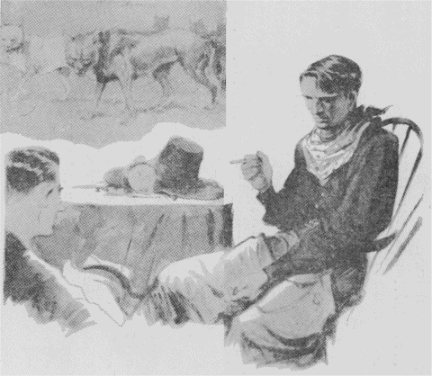

| 動物物語 狼の王ロボ | |
| シートン アーネスト・トンプソン | |
| 青空文庫 (2017) | |
動物物語 狼の王ロボ
アーネスト・トムソン・シートン
薄田斬雲訳
これはアメリカのアーネスト・トムソン・シートンという人が書いた物語で、文中『私
』とあるのはシートン氏のことです。シートン氏は幼
いころから動物が大好
きで、動物に関する物語と絵をかくことを一生懸命
勉強しました。そしていつも山岳
や草原に露営
の生活をして、野生動物を深く観察し、りっぱな動物物語をたくさんあらわしました。この『狼
の王ロボ』は、その中でも傑作
といわれる面白いものです。
「カランポーの谷の王様おおかみロボの首に、一千ドルの懸賞
がかけられた。」
このうわさは、土地の新聞から全メキシコへひろまった。カランポーというのは、北部メキシコを流れている川の名だ。その川の流域
には、広々とした草原が開け、それが大きな牧場になっていた。ところがこの谷に一群のおおかみがすんでいて、しきりに家畜
をあらす。そのおおかみの群れの王と見られるのは、土地の人々からロボと呼
ばれる、まことに悪がしこく獰猛
なやつであった。
土地の羊飼達
はもちろん、よそからもおおかみ狩りを自慢
の連中が続々とやってきて、この悪獣
を退治
しようとしたのであったが、いずれも失敗して引きあげる。そこでこの一千ドルの懸賞広告
が新聞にでたのである。
そのときカランポーに住む友人から、私
のところへ、このおおかみ狩りをすすめる手紙がきた。その一節に、こんな文句があった。
「このロボというのは、灰色
の大きなおおかみで、カランポー狼群
の王といわれるだけにとても知恵
がはたらき、毒薬にもわなにもかからない。この地方の牧場でその害をこうむらないものはなく、深夜はるかにその長くひいた異様
なほえ声を聞くと、たれでもぞっと身ぶるいがするという。ロボの一党
は、非常に数が多いようにいわれているが、私の調べたところでは、五、六頭にすぎないようだ。しかし、どれもこれも狂暴
なやつばかりである。私には今のところそれを退治るいい工夫が浮
かばん。このさいきみの腕
にたよるほかない......」
私
は以前、おおかみ狩
りをしたことがあるが、おおかみを追っかけまわる痛快
さといったらない。そのときの味がわすれられないので、友からの手紙を受けとるとろくに準備もしないでカランポーへ乗りこんだ。
友は大喜びで私
を迎
えてくれた。その晩は何年ぶりかで一緒
に酒を酌
みかわしながら、私はくわしくようすを聞いた。
友は語る、
「このあいだも、テキサス州から、タンナリーという男が、おおかみ狩
りはおれにかぎると大元気で乗り込んできた。相当経験があるらしく、小銃
や短銃
も高価なものをもち、乗馬と二十頭の猟犬
を連れていた。それで『明日
にもロボの首を取ってきて床
の間の飾
り物に［＃「飾
り物に」はママ］
する』と大きなことをいっていたものさ。ところが初日でみごと失敗してしまった。というのは、このタンナリーは、テキサス州の平
な草原のおおかみ狩りにはなれてもいたろうが、このカランポーの谷は、高低があって、川の支流が縦横
にいりまじっている。猟犬はきたばかりの不案内の土地なので、狼群
を追いつつ四方へちっていったのはいいが、勝手を知ったロボの群れにひどい逆襲
をくらって、夕方帰ってきたのは、たった六頭。その中
二頭はあばらをかみさかれているというみじめさだ。タンナリーはその後も二回でかけたが、一層
の不成功で、最後の日には、その乗馬が断崖
からころがり落ちて死んだ。彼が、すっかり力をおとして、テキサス州へ帰ったのは一昨日のことさ。」
翌日
から私
は地形を見にまわった。なるほどカランポーの谷は、土地の高低があって、川の流れも多く、とても馬や猟犬
でおおかみを追いまわせそうもないところだ。
「毒か、わなを用いるほかない。」と、私
は友に語ったのだが、大きいわなは持ってゆかなかったので、まず一服
毒を盛ることにした。
私
は、わかい牝牛
の腎臓脂肪
へチーズを交ぜ、それを陶器皿
に入れてとろ火で煮
た。金物
の臭
いを避
けるために、中の骨
を小刀がわりに使った。この煮物
をさましていくつもの塊
に切り、その切り口へあなをあけて、毒薬を詰
め、その上へチーズを厚くぬってふたをした。このご馳走
をつくるあいだ、私
は人間の臭
いがつかないように注意して、牛のほふったばかりの温
かい血へ浸
した手袋
をはめ、また私の息がこの餌
の肉へふきかからないように、マスクをかけた。こうして丹念
につくったご馳走
を、同じ血へ浸したわらづとの中に入れた。それを持ってカランポーの谷を一巡
し、一粁
おきぐらいに一つとずつを草のあいだへおいてきた。狼群
は鉄砲
をおそれて日中はあまりでないし、また人間の姿
が見えると、さっさと逃
げてしまうので、この日は別段
危険
もなかった。
その夜、たしかにロボのほえる声が聞こえたというので、私
は大喜びで翌朝
早
く結果を見にでかけた。
はたしておおかみの足跡
はたくさんある。ロボの足跡は、普通
のおおかみよりは大きいのですぐわかった。その足跡から推
すと、背
の高さ一メートルにちかく、体重も六、七十キロくらいはたしかにある。おそろしくたくましいやつらしい。
やがて最初の餌
の肉のところへくると、大きな足跡が、そこへ立ちどまった形に残っていて、肉塊
はなくなっている。
「しめた！」
私
は胸
をおどらして、ついてきた者達
にほこった。
「やっこさん、一、二粁
も先にきっとかたくなっているぞ。」
私どもは馬に一むちくれて、威勢
よくつぎの餌肉
のところへいった。はたしてそこにもない。私は狂喜
して、
「ロボばかりでなく、あの畜生
ども、枕
を並
べて往生しているにちがいない。」と叫
んだ。
その付近を見まわったが、しかしおおかみの死体はなかった。足跡
ばかりたくさんに残っている。第三番目の餌肉
へきてみたが、ここにも肉塊はなくて、足跡はさらに第四番目へつづいている。
私
は「はてな。」と思った。と同時に疑
いと喜びとがごっちゃになってきだした。
私
たちはだんだん心配になって、第四番目の餌肉
のところへきてみると、おどろいたことには、肉に手をつけてないばかりでなく、そこへ、前の三か所の餌肉も一緒
に並
べてあるではないか。しかもごていねいにも第五番目の餌肉までが、ちゃんと持ってきて積みあげてあるではないか。
「ヘー！」と、私は全身の血をぬき取られたような気持ちになった。りこうぶった私の計略
は、狼王
ロボのためにすっかり裏
をかかれてしまったのである。
「とてもこれは毒で退治
られる代物
ではない。」
と私はさじを投げ、大型のわなを郷里
へ注文してその到着
を待った。
そのあいだの一夜、おおかみの群れがすごいいたずらを演じて、カランポーの谷にすむ人たちを興奮
させた。一人
のわかい羊飼
いがその模様
を私
に物語った。
「旦那
、おおかみというやつは、羊
を食うのでなく、ただおどかしてかみ殺しては喜ぶのです。一体
、羊は、千頭から三千頭までを一群にして一人
二人
の番人をつけておくのです。夜はかこいの中へ入れて、両端
の小屋へ番人が一人ずつ寝
ています。羊はちょっとしたことにもおどろく臆病
な動物ですが、中へ五、六頭の山羊
を入れておくと、羊はこの山羊をたよりに思って、夜などもなにかさわぎがおこると、みな山羊
のそばへより集まるのです。ところがあのロボの悪党
め、そこのことまでよく知っていて、昨夜
は先に山羊をかみ殺してしまったのです。羊どもはたよるものがなくて、八方へちりぢりになったものだから、とうとうかみ放題に二百五十頭
も殺されたのです。」
「まるで子供
が、玩具
のサーベルでトマトをやっつけるようなものだね。」と私
はあきれていった。
「まったくです。」と、若者
は話に油が乗って、
「あのロボのやつには、これまでにもう羊や牝牛
合わせて二千頭あまりやられています。一体おおかみは意地きたないやつで、なんでも腹
一杯
食いさえすれアいい。食べ物のよしあし
なんてかまわないのが普通
ですが、あのロボの仲間
にかぎっては、口がなかなかおごっていて、死んだ肉は食わない。人間がほふった家畜
は食わない。なんでも自分の歯でかみ殺した上等なのだけ食うのです。一番好
きなのは当歳仔
のやわらかな牝牛
で、年とった牛や馬は好かない。人間よりもよほどぜいたくです。また羊の肉もあまり好かない。ただ、かわいそうに逃
げまどうやつを片端
からやっつけてしまうのです。本当ににくいたらありゃしません。」
羊よりは、わかい牝牛
を好
むというのは初耳で、私
は話をそこへ向けると、若者
は、先年、ロボが牝牛をとり殺したという実見談をはじめた。
「私
はそのときはなれたところから見ていたのです。最初牛の群れとおおかみの群れとが原中でばったり出くわしたと思ってください。いばったやつで、ロボめ、自分は手出しもせずに、仲間の奴等
に仕事をまかせているのです。ロボのつぎの位にいるブランカという白おおかみが大将
になって、五、六匹のおおかみが牛の群れへおそいかかってきました。牛の中には一頭
牝牛
の当歳仔
がまじって、これは後列へかくれていました。牛の群れは一列に戦線を張って角をふりたてたので、白おおかみ等もちょっと手がでません。すると、さっきからそれを見ていたロボのやつ、一声ほえると、横合いからだしぬけに牛の群れへおどりかかった。牛どもはたちまち列をみだして逃
げる。ロボはめざす牝牛
へせまる。牝牛はやっと七、八十メートルも逃げたが、たちまち追いつかれてしまった。ロボはその喉
に食いついたなり、身を沈
め、うんとふんばると、牝牛
は、角を地についてまっさかさまに大きくとんぼ返りに倒
れる。はずみをくってロボもはね飛ばされそうになったが、腰
の強いやつで、からだをぴたりと地につけてぐっとふみこたえます。そこへ白おおかみブランカはじめ仲間
が競いかかって、見る見る牝牛
の息の根をとめてしまいましたよ。ロボのやつ、獲物
は仲間にまかせてけろりとしているのです。私
は大声に叫
んで、馬に乗って追っかけると、おおかみどもは鉄砲
がこわいものだから、さっさと逃
げていく。私
はいい機会だと思って、持っていた毒薬を手早く、たおれた牝牛
の体へ二個所に注ぎこんで、そのまま家へ帰りました。おおかみどもは自分の歯でかみ殺した動物は安心して食う習慣ですから、あとでもどってきて、その肉を食うにちがいないとにらんだのです。翌朝
私は、
「あのロボのやつ、いまごろはかたくなってくたばっていることだろう。」と勇んで、昨日
のところへ行
ってみると、小面
にくいたらありゃしません。毒を注
したところだけ、きれいにさき捨
てて、毒のない部分をさんざん食いあらしていたのです。一服
盛
ろうたってあいつにゃ駄目
です。」
そのうち、注文したわながたくさん到着
した。私
は大急ぎでそれを組み合わせ、夜になってから原の方々へ埋
めておいた。翌日
見まわると、ロボの足跡
はわなからわなへと続いていたが、わなはみなほじり出されて、鉄鎖
も丸太
もむきだしになっている。足跡から判
ずると、ロボは狼群
の先に立ってわなへ近よると、仲間
を止めて、自分ひとりでうまい工合
にかきだしてしまうらしい。私
はいろいろ工夫をこらし、方法をかえていくたびもわなをかけてみたが、ロボはなかなかたくみにわなをかきだしてさらしものにするのである。
だが、このカランポーの狼群
の行動には、私
にとけないことが一つあった。それは私のこれまでの経験によると、おおかみの群れというものは、一匹
の指導おおかみにしたがうのがならわしであるのに、ここのはおりおりロボの大きい足跡
の前にやや小さい足跡がついているのである。
ところが、ある日、牛飼
いがやってきての話に、
「私
は今日
例のおおかみどもがずっと向こうの方を歩いているのを見ましたが、白のブランカのやつが、ときどきロボの先になってゆくのですよ。」と。
私ははたと手をうった。
「それでわかった。そのブランカはめすなのだ。もしおすおおかみがそんなですぎたことをしたなら、ロボがすぐかみ殺すはずだ。小さい足跡
が先に立っていたのもそれでわかった。」
そこで新工夫が浮
かんだ。私
はわかい牝牛
をほふってその死体のまわりに、わざと地上にむきだしにしたわなを二つおいた。それからその死体から首をきり取って少しはなれたところへおき、その周囲へ二つの鋼鉄製
のわなをうめた。この仕事をするあいだ、私は私の手足や道具などをその牝牛
の血に浸
し、地面へも同じ血を一杯
にまいた。このしかけがすむと、今度はおおかみの皮でその辺の地面を一帯になでておき、またおおかみの足でわなの周囲にたくさんの足跡をつけた。この首と胴体
とのあいだはせまい通路になっているので、その通路へ一番精巧
な二つのわなをうめ、そのわなの端
を牝牛
の首に結びつけた。
私
が知っていることでは、おおかみというやつは、動物の死体を見つけると、それを食おうという気がなくても、きっと近よって、それをかいではいろいろとためしてみるものである。で、私
はこのカランポーのおおかみどもも同じ習慣をもっているとにらんだのである。ロボはまたも私の計略
を見やぶるかもしれない。けれど、私の心の中にはべつな考えがあったのである。

翌朝
、私
たちは馬へ乗って昨日
のわなの辺を見まわりにいった。おおかみの足跡
はたくさんにある。私は胸
をおどらした。急いでその跡をたどってみると、牝牛
の首もわなもない。私はいよいよ胸の鼓動
をたかめて、その辺の足跡
をこまかにしらべた。すると、ロボが他の仲間
を牛の死体に近づけないよう注意しているあいだに、やや小さい一匹
のおおかみが、少しはなれている例の首の方へ歩みよって、そこのわなにひっかかったらしい跡がある。
私
は、しめたと思った。
そこでその足跡をつけてゆくと、二キロ足らずのところで、はたせるかな、白のめすおおかみブランカが、わなにかかった足をひきずりながら、牝牛
の首をくわえてかけてゆくのに追いついた。牛の首は六、七キロもあろうというのに、ブランカのかける早さは人間の足では追っつけないくらいだった。しかしゆく先には岩石がたくさんあったので、とうとう牛の角が岩へひっかかり、ブランカは動けなくなってしまった。
私
たちが近寄ると、ブランカはきっと立ちあがってものすごい長ぼえをした。すると、はるかに木蔭
から、同じ調子の一層
高いほえ声がひびいてきた。それはロボの声にちがいない。私たちはすぐ得物
をふりあげて近寄りざま、ブランカをなぐりつけた。ブランカは力がつきて最後の悲鳴をあげてぐたりと横に倒
れた。私は輪繩
をその頸に投げかけて、その端
を馬につなぎ、一むちあてると、馬は家
の方へ駈
け出した。
そのあいだ、ロボは遠くでしきりにほえていたが、鉄砲
がこわいと見えて私たちのそばへよりつかなかった。
この日、夕方までロボの遠ぼえがきこえていたが、日が暮
れると、その声はだんだんに近づき次第にかなしい調子を帯
びてきかれた。あらあらしい声でなく、長く引いた苦しげなうめきのようにきこえた。
「ブランカ、ブランカ！」と呼
んでいるかのようだ。
夜がふけると、その声は一層近くなって、私
たちが昼間ブランカを殺した辺にきた。そこにはブランカの血がたくさんにたれていたので、かれはそこでおこったできごとをさとったことであろう。
羊飼
いどもも、「これまで、こんなにおおかみの悲しげな声を聞いたことはありません。」といった。
この夜、ロボがただ一匹
で来たことは、その足跡
で知った。そしていつもとちがって、とても不注意にかけまわったようすである。かれは妻
のブランカを殺されたために心がみだれていることがこれでわかる。かれはブランカの死体をさがしにきたが、それを得
られなかったうらみに、戸外五十メートルのところで、番犬をさき殺して去った。私
は、ロボが狂乱
しているのを知ったから、いよいよわなを要所要所にかけておいた。一度はたしかにその一つにひっかかったが、ロボはそれをねじ切って逃
げた。その力の強さにはいまさらながらおどろかされた。ロボはブランカの死体を見つけるまでは、その辺を去らない気持ちらしい。私
はこの機会にかれを退治
してやろうと心をくだいた。
「おしいことだった。ブランカを殺さずに、いけどっておいておとりにしたら、翌日
の晩
には、きっとロボをつかまえることができたであろう。」とくやしかった。
私
は、ありたけのわなを百三十個集め、それを残らずしかけて土にうめた。そのときは毛布を地べたにひろげた上に坐
って仕事をし、人間の臭
いが残らないようにした。そして、あたり一帯にブランカの死体をひきずりまわして、土にその臭いをうつした。それからブランカの足でもってわなのあいだあいだへ足跡
をつけた。こうしてできるだけ用心をして作戦計画を立て、さてその結果はどうかと待った。
その夜中、一度私
はロボのほえ声を聞いたように思った。が、しかとしなかった。翌日
私は早く見廻
りに出かけた。しかし百三十個も飛び飛びにわなを見まわるので、北の谷間を残して日が暮
れた。なんの得
るところもなく、私たちは家に引きあげた。すると夕飯の席で一人
の羊飼
いが語った。
「今朝
、北の谷で牛の群れがなんだかさわいでいたようです。なにかあったのではないでしょうか。」と。
私
は翌朝
早く胸
をおどらして北の谷へとでかけた。わなをしかけておいた場所へくると、突然
大きな灰色
の姿
が、むくりと立って逃
げ出そうともがいた。私はおどろきとおそれと喜びに瞬間
棒立
ちになった。
私はこのとき、はじめてカランポーの谷のおおかみの王ロボの姿をはっきりと見たのである。かれは二昼夜のあいだ、わなを抜けようと苦しんだので、いまはつかれはてている。それでも私が近よると、頸毛
をさかだててものすごくうなり声を出し、たちまち深い低いほえ声をしてカランポーの谷をふるわせた。その叫び声の中には、仲間
の救いを求める合い図が含
まれたことであろう。しかし他のおおかみはついに姿を見せない。ロボは必死に身をもだえ、私へ跳
びかかろうとするが、わなが四つ連結しているので、重さも百二十キロからある。いくらもがいても丸太
と鉄鎖
が一層
もつれるばかりで、さすがのロボもいまはどうしようもないのである。それでもその雪のように白い大きいきばをむき出して、鉄鎖をかみ切ろうとする。そのすごさは身の毛がよだつほどである。私が銃床
をその鼻先へさしだすと、はげしくかみついてみごとな歯なみのあとを深くきざみつけた。（私はいまもその銃
を記念として大事にしている）両眼
は憎
しみといかりに青く燃
え、私をにらんで底うなりを発したとき、私の乗馬は震
えてあとずさりした。しかしもうロボもうえと苦闘
につかれはてているので、やがてぐたりと地べたに横になってしまった。
私
は輪繩
を手にしたが、ふとかわいそうだという気持ちがして、
「こら悪魔
、悪業の数々は今報われるときがきたぞ、さ、観念せ。」
私はそういいながら、ぱッと繩
をその頸
へ投げかけた。ところがさすがは狼王
、ふっと身をかわして繩をくわえとり、その結び目をかみきってずたずたにした。
どうせ、いざとなれば、銃丸
一発
でしとめられるのだが、私はそのりっぱな皮を傷
つけたくなかったので、他の繩
を取って、まず木の枝
をロボへ投げると、かれはそれを歯で受けとめた。そこで、私はさっと輪をなげてかれの頸
にかけて締
めてしまった。そのままぐっとひきしめて息の根を絶
とうとする仲間
を、私は、
「待った、殺さずに生かして持ち帰ろう。」とおしとめずにはいられなかった。
ロボはもう向かってくる勢いもないから、私達
はその口へ棒
をかませ、太綱
であごをしばった。いまはかれは、まったく観念したような目で私たちを見ている。
「年貢
のおさめどきがきた。どうでも勝手にしてくれ。」
そういったようすである。やがて私たちへ見向きさえしなくなった。
そこでみなでロボの足をしばって馬へ結えつけた。ロボはうなりも叫
びもせず、だまってなすがままに身をまかせた。その目は光っているが、私たちには向けられていない。遠くの草原をじっと見ている。そこには永
い年月かれが君臨
した広々とした領地がある。かれの部下は王を失って、いまはその谷間の奥深
く逃
げていったことであろう。
私
たちは家に帰ってから、ロボに頸輪
をかけ、じょうぶな鉄鎖
でつなぎ、手足を自由にし、輪繩
を外
して家の前のくいへ結びつけた。そこで始めて安心して私はロボのからだを細かにしらべた。世間の噂では、「ロボの頸
に金環
がついている。」とか、また、「かれの肩
には悪魔
の仲間
である印として逆
十字の斑点
がある。」とか伝えられていたが、それはみなうそであった。ただその腰
に大きい傷痕
が見られたのは、前日タンナリーがロボがりにきたとき、その猟犬
がかみついたあとと知られた。
私はロボの前へ肉と水をおいたが、かれは見向きもせず、しずかに腹
ばいになってはるかの草原を見つめている。私がステッキで触
れても身動きもしない。日が暮
れてもかれは一心にかなたを眺
めていた。
「今夜、仲間
のおおかみどもがくるかも知れない。」
私
はみなへ注意しておいたが、ロボは一度仲間を呼
ぶようなほえ声を出したきりで、なにごともなかった。
力尽
きたしし、翼
の自由を失ったわし、またはめすを失ったはとのように、ロボも妻
のブランカにさきだたれて力をおとし、この世に望みを絶ったのであろう。翌朝
起きてみると、かれはしずかに眠
るが如
く横たわって冷たくなっていた。
私はその頸
から鉄鎖
を取り、羊飼
いに手伝わせて、ロボをブランカの死体をおいた小舎
へ運び入れて、そのかたわらに並
べてやった。
そのとき羊飼いはいった。
「ロボはやっぱり王様だったな。その死に方まで......」
私は、この羊飼いが、私の心持ちをそのままいってくれたような気がして、だまってなんどもうなずいたのだった。
（昭和一三年五月号）
底本：「少年俱楽部名作選 3
少年詩・童謡ほか」講談社
１９６６（昭和41
）年12
月17
日
底本の親本：「少年俱楽部」講談社
１９３８（昭和13
）年5
月号
初出：「少年俱楽部」講談社
１９３８（昭和13
）年5
月号
※表題は底本では、「動物物語（改行）狼
の王ロボ」となっています。
入力：sogo
校正：noriko saito
２０１７年6
月25
日作成
青空文庫作成ファイル：
このファイルは、インターネットの図書館、青空文庫（http://www.aozora.gr.jp/）で作られました。入力、校正、制作にあたったのは、ボランティアの皆さんです。